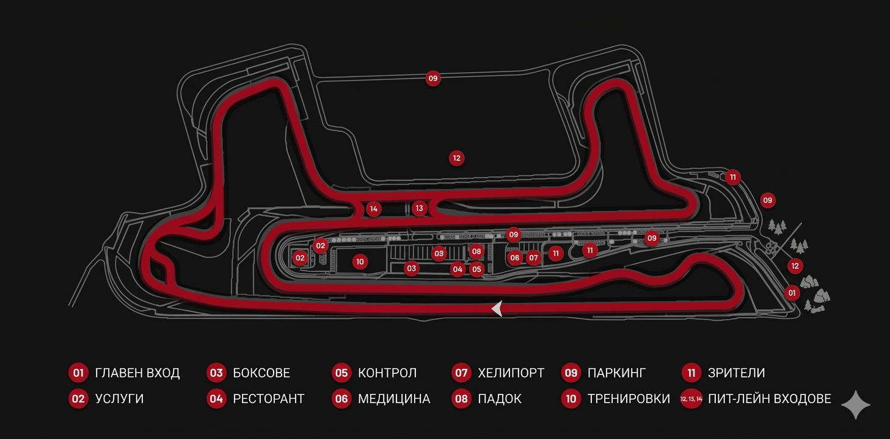

БЪЛГАРИЯ - САМОКОВ

ТЕХНИЧЕСКИ ДАННИ - A1 MOTOR PARK
ОФИЦИАЛНО ОТКРИВАНЕ
21 МАРТ 2026
ДЪЛЖИНА НА ТРАСЕТО
4.000 km
КОНФИГУРАЦИИ
21 ВАРИАНТА
НАЙ-ДЪЛГА ПРАВА
> 900 m
МАКСИМАЛНА СКОРОСТ
280+ km/h
НОВАТА ЕРА: ОТ LARA RACING КЪМ A1 MOTOR PARK
Разположена само на 5 минути от Самоков, пистата е проектирана по световните стандарти на FIA и FIM. Със своята ширина от 12 до 15 метра, тя предлага оптимално сцепление и безопасност.
Една от най-впечатляващите характеристики е правата от над 900 метра, където състезателните автомобили могат да развият скорости над 280 км/ч.